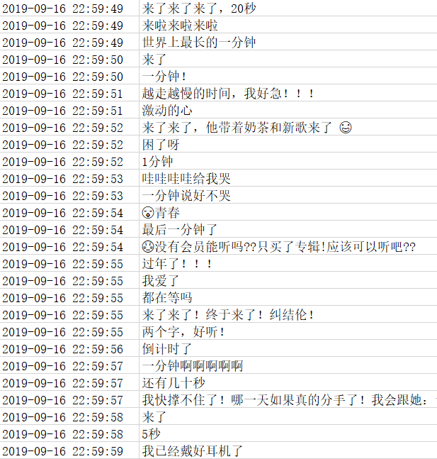

9 月 16 日晚间，周董在朋友圈发布了最新单曲《说好不哭》
发布后，真的让一波人哭了
一群想抢鲜听的小伙伴直接泪奔
因为 QQ 音乐直接被搞崩了
没想到干翻 QQ 音乐的不是网易云音乐
也不是虾米音乐
而是周董！
周董成成功地凭一己之力干翻了 QQ 音乐
那么听过周董新歌后的小伙伴都是怎么评价的呢？
这里，我们获取了 QQ 音乐的近 20W 条评论数据进行分析
看看其中有哪些有趣的东西
在 QQ 网页版直接搜索『说好不哭』
很容易就能找到单曲页面
拉到页面最下方
可以看到评论的分页查看按钮
按下 F12 点击第二页
在请求流中就可以看到对应的请求
其中可以看到两个重要参数：pagenum 和 pagesize
将请求 copy 到 Postman 中进行测试
发现可以直接获取到数据
连 Header 都不需要添加
这里尝试对请求参数进行了精简
最终只需要如下几个参数即可
从 Postman 中可以直接获取到对应的代码
import requests
url = "https://c.y.qq.com/base/fcgi-bin/fcg_global_comment_h5.fcg"
querystring = {"biztype":"1","topid":"237773700","cmd":"8","pagenum":"1","pagesize":"25"}
response = requests.request("GET", url, params=querystring)
print(response.text)这里是单页评论的获取
所有评论的获取只需递增 pagenum 即可
返回数据中有很多暂时不需要的字段
这里我们只取其中的用户名、评论时间、评论内容、点赞数
对应如下字段
{
"nick": "丨那壹刻永遠消失\"\"",
"praisenum": 1,
"rootcommentcontent": "越听越好听怎么回事！",
"time": 1568729836,
}由于数据量较大
这里我们暂时将数据存放在 Excel 中
一来无须依赖外部数据库
二来可以使用 Excel 对数据进行二次处理
数据存储代码如下：
def file_do(list_info, file_name):
# 获取文件大小
if not os.path.exists(file_name):
wb = openpyxl.Workbook()
page = wb.active
page.title = 'jay'
page.append(['昵称','时间','点赞数','评论'])
else:
wb = openpyxl.load_workbook(file_name)
page = wb.active
for info in list_info:
try:
page.append(info)
except Exception:
print(info)
wb.save(filename=file_name)首先我们对评论按小时区间进行汇总
由于时间粒度比较小，这里对时间粒度进行了一些处理
周董的新曲是在 9.16 号 23 点准时发布的
可以看出在发布后的一个小时内（23:00-24:00）
评论数量达到了高峰
占了总评论数的一半以上
另外看了一眼 9.16 23 点之前的评论也很有意思

一种搬好小板凳嗑着瓜子坐等的既视感
词云生成的方法有很多
可以用代码生成
也可以用一些在线工具
这里我就使用了在线词云工具：wordart
后续可以给大家单独再普及一下
生成效果如下
周杰伦、杰伦字眼很明显
还有大量跑来『打卡』的
『好听』、『来了』、『哭了』、『爱了』
其中少不了的还有『青春』
另外『阿信』的出现估计给了很多人惊喜
我们以点赞数对评论进行了排序
排名靠前的评论是如下一些
另外，QQ 音乐官方也会放出精彩评论
对比下可以看出和我们获取到的数据是比较一致的
只不过官方并不是按点赞个数进行排名的
看得出来这些排名靠前的大都是在回忆青春
这些评论之所以能够得到大家的共鸣
也许他们的青春里都有一个周杰伦吧